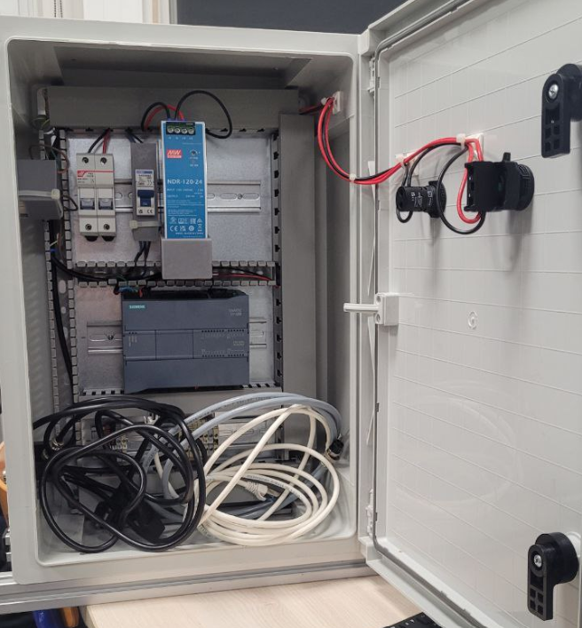
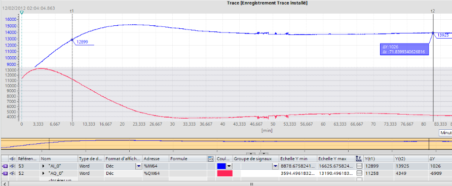
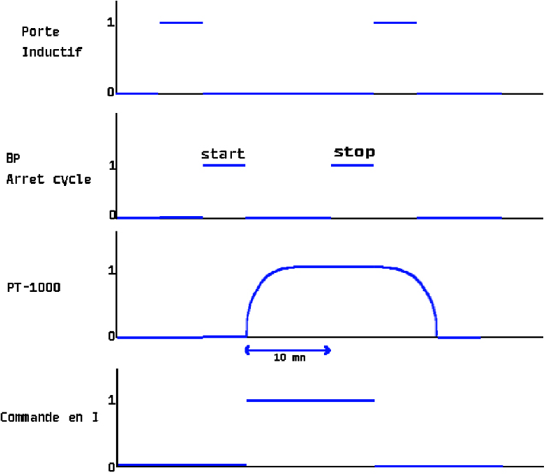
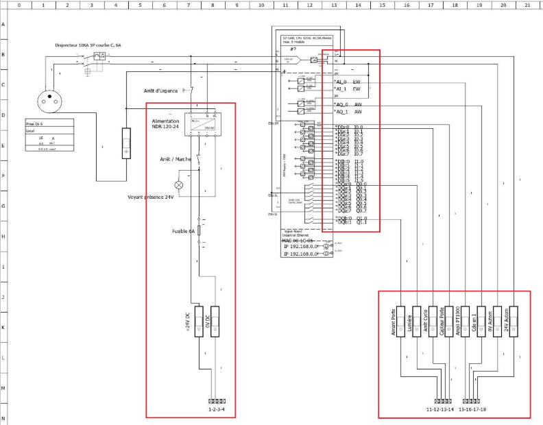

SAE · BUT 2 · SEMESTRE 4 · AII
Mugochaud — Régulation thermique
Programmation d’un automate et régulation PID pour maintenir la température autour de 50 °C, avec une tolérance de ±5 °C.

01 — Contexte et besoin
Mugochaud est une SAE de BUT 2 parcours AII portant sur le maintien en température. Le système associe un automate, des entrées/sorties câblées et une régulation PID.
L’objectif de régulation communiqué est de maintenir la température à 50 °C, avec une tolérance de ±5 °C.
02 — Ma contribution
- Traduction du GRAFCET dans TIA Portal.
- Câblage de l’automate et des entrées-sorties sur le boîtier du meuble au chaud.
- Programmation du régulateur PID dans TIA Portal.
- Réalisation du suivi et du tracé de la montée en température par rapport à la consigne de 50 °C (±5 °C).
- Contribution à la rédaction du DDC, du DDV et du DDF.
Ces activités décrivent ma contribution au projet.
03 — Démarche technique
- Traduire le GRAFCET en programme dans TIA Portal.
- Câbler l’automate et les différentes entrées-sorties sur le boîtier.
- Programmer le PID pour piloter la régulation thermique.
- Tracer l’évolution de la température et la comparer à la consigne de 50 °C et à sa tolérance de ±5 °C.
- Contribuer à la formalisation technique dans le DDF et le DDC (partie énergie).
Les preuves présentées ci-dessous comprennent le câblage, le schéma électrique, le chronogramme et la courbe de régulation.
04 — Preuves du projet



